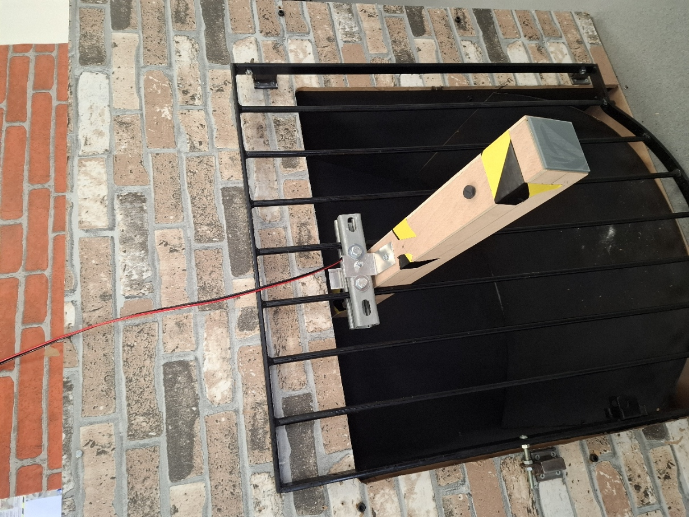
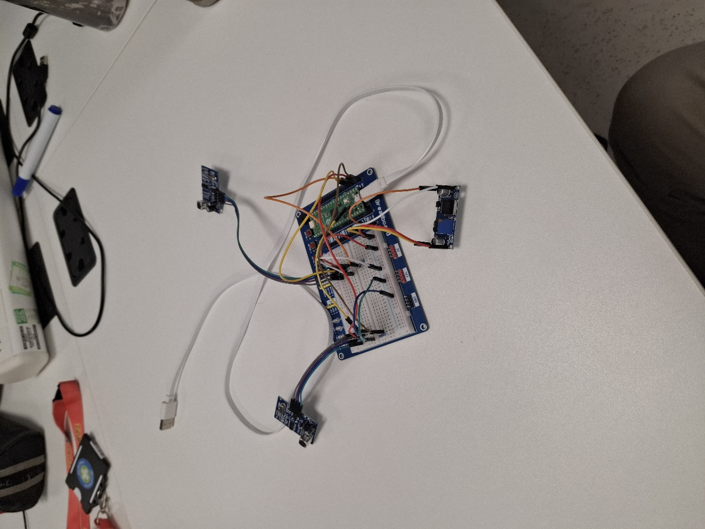
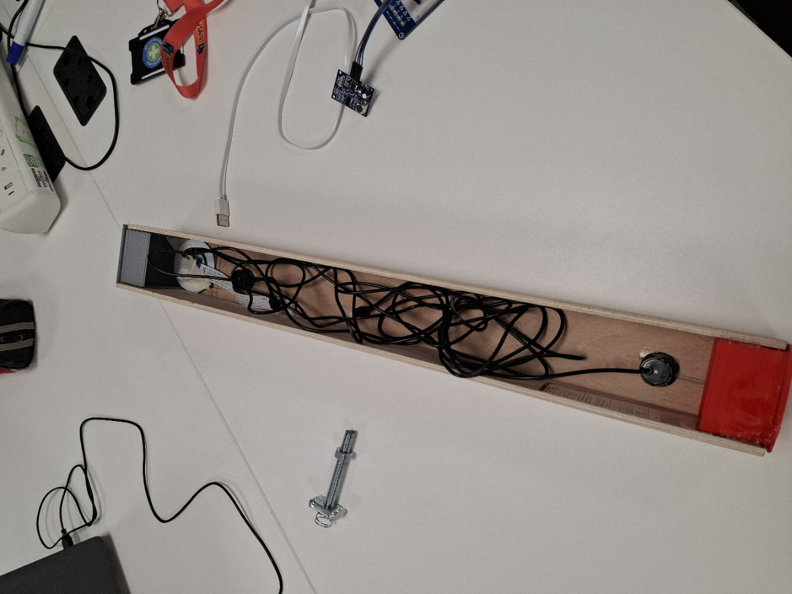

The 21st Century Engineer
This module was an introduction to engineering - learning about the different enginering dicaplins .
This module introduced engineering disciplines and professional roles. It focused on core technical skills like CAD, metrology, and programming, while emphasizing accuracy, ethics, standardization, and industrial communication.
For this module, we had to produce the following:
- A blog post about both sustainability and security in manufacturing
- A functional specification
- A engineering artifact for a client (Network Rail)
This project was a response to a professional brief from Network Rail to develop a robust, retrofit monitoring system for culverts. The client required a reliable and cost-effective method to track water levels and detect
debris in hard-to-reach drainage areas to prevent critical infrastructure failure. The task demanded a resilient, low-maintenance solution capable of operating in harsh, confined environments to provide real-time data without the need
for constant manual intervention.

I learnt a lot doing this module such as x, y and z.

thuis is cool
